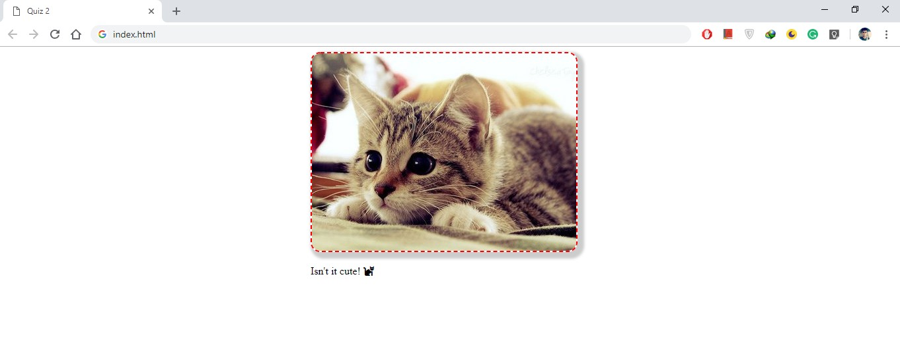

Quiz 2
Style Your Favorite Pet
For this quiz, I want you to download an image of your favorite pet of size 400x300 and add some style to it.
max-width , margin , border , border-radius , cursor ,
and box-shadow to produce the result given below.

Use color of the border #fa<last four digits of your registration number>
Border
If you've ever used a table in a word processor or spreedsheet, then you should be familiar with borders. With CSS, you can add a border to just about anything. There are a ton of different options for customizing borders like style, width, and color! Click here to learn more.
Cursor
It's possible you've never noticed your cursor change when viewing a website because it's so subtle. But, changing the cursor can be extremely helpful when trying to communicate things to the user. For example, if a user hovers over a link, changing the cursor to a pointer let's the user know the link can be clicked.

A normal button on the left, and the same button while a mouse is hovering over it on the right
For most situations your browser automatically changes the cursor, but you can use the cursor property to override its behavior. See this demo of all the different cursors in action! Obvisouly, this property only applies to users with a mouse .
Box-Shadow
Use shadows to add a sense of depth to images
The box-shadow property is relatively new to the world of CSS. You can use it to add a shadow to an element. If you want to try experimenting with box-shadows, check out this box-shadow generator from CSSmatic.
Icon
Icons play a vital role in web design
The number of icons we see on daily basis is amazing. They are everywhere around us, both online and offline. We love to use them. They enhance the aesthetic of our sites and can provide a better user experience. Icons can put content in a nutshell, can draw attention and can increase readability. Use the pet icon below the pet image as shown in image. Search out icon from gallery of font-awesome.
How to Complete this Quiz
Edit index.html, style.css within class time to replicate the same styling seen in the image above.
I've already written the selector portion of the code, you just need to fill in the styles.
#main { /* add CSS here */ }.pet { /* add CSS here */ }
Try your best to complete the exercise and take screen-shot of your achieved view and paste it in images folder. Push your code and image on your forked repository on github.